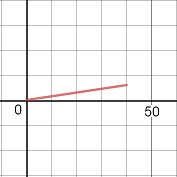

Shortcut to this page: alanlam.netlify.com/calculus
Functions. Why study them? Why are they so important that we devote a field of math to studying them?
Jack runs up a hill and then back down to his starting point for a total distance of `12` kilometers. He runs `9` km/hr uphill and `16` km/hr downhill and uses the same straight path in both directions. What is Jack's distance from his starting point at any given moment during his run?
For whatever reason, we want to know his distance from his starting point at any given moment. In kilometers, no less. (Perhaps this has some location tracking applications?) For me, the words "at any given moment" is a tip-off that we should come up with a function so that we could plug in any time and get his distance.
We are probably familiar with the formula `d = rt` (distance = rate * time). We're looking for distance. We have his rates. This looks like it'll be helpful.
Since he has different rates going up and down the hill, we'll probably need `2` equations to model this situation. One for going up the hill. One for going down the hill.
Let's let `t` be the time in minutes. When he's going up the hill, he's going at a rate of `9` km/hr. Since `t` is the number of minutes, we'll convert the rate so it becomes `9/60` km/min. Now we can come up with the equation `d = 9/60 t`.
Going down the hill is almost the same. It seems like the equation would be `d = 16/60 t`. Let's combine these two equations into a piecewise function.
`d(t) = {(9/60 t), (16/60 t):}`
So if we wanted to find the distance after `1` minute, we would plug in `1` for `t` and get ... wait. Which equation do we use?
Thinking about our situation, it takes him `40` minutes to run up the hill. `(6 \ text(km))/(x min) = (9 \ text(km))/(60 min) => x = 40.` (If it takes him `60` minutes to run `9` km, then it takes him `40` minutes to run `6` km, which is the length of the distance from the bottom to the top of the hill.) So at `1` minute, he's still running up the hill, which means we want to use the first equation. In order to clarify which equation we should use, we should set bounds on `t` for our piecewise function.
`d(t) = {(9/60 t \ \ \ 0 <= t < 40), (16/60 t):}`
So for what values of `t` do we use the second equation? `(6 \ text(km))/(x min) = (16 \ text(km))/(60 min) => x = 22.5`. It takes Jack `22.5` minutes to run `6` km if he takes `60` minutes to run `16` km. But keep in mind that at this point, he's already run for `40` minutes. So our function becomes:
`d(t) = {(9/60 t \ \ \ 0 <= t < 40), (16/60 t \ \ \ 40 <= t < 62.5):}`
This is almost correct. When Jack is at the top of the hill, he should be `6` km away from the starting point. But `16/60 * 40` doesn't give us `6`. We have to modify the second equation a bit.
`d(t) = 16/60 t` measures how much distance Jack has covered, not his distance from the starting point. To find that, we have to subtract the distance he's covered from the total distance.
So our second equation becomes `d(t) = 6 - 16/60 t`. But plugging in `t = 40` still doesn't give us `6`. That's because we also have to take into account that he's been running for `40` minutes already at this point. So we have to subtract `40` from `t`. One way to look at it is that we have to find a way to make sure that when we plug in `t = 40`, we get `6`. Our final answer becomes:
`d(t) = {(9/60 t \ \ \ 0 <= t < 40), (6 - 16/60 (t - 40) \ \ \ 40 <= t < 62.5):}`
#modelingreality
In the previous problem, we came up with a function `d` that measured Jack's distance from the starting point. In a sense, `d` is a position function. We also assumed that Jack was running at a constant rate, i.e. a constant velocity. It turns out if the average velocity of `d` is the same on any interval, then `d` is a linear function.
Looking at the graph of `d(t) = 9/60 t`, for `0 <= t < 40`, it does look like a line. But why?
Suppose `s: RR -> RR` is a position function. If the average velocity of `s` is the same on any interval, then `s` is a linear function.
Let `t_f, t_i in RR` (where `t_f != t_i`) be times and let `s(t_f), s(t_i) in RR` be the positions at those times.
Average velocity = `text(change in position)/text(change in time) = (s(t_f) - s(t_i))/(t_f-t_i)`.
Since it is the same on any interval, we can say `(s(t_f) - s(t_i))/(t_f-t_i) = c` for some constant `c in RR`.
Then `s(t_f) = c(t_f - t_i) + s(t_i)`
Since that is of the form `y = mx + b` (where `y = s(t_f), m = c, x = (t_f - t_i), b = s(t_i)`), it is a linear function.
Those who have taken calculus know that integrating velocity gives you position. They also know that integrating a function is the same as finding the signed area under a curve. What does position have to do with signed area under a curve? How are these two things related?
At 11:00 am, a car driving north on Interstate 5 is `52` miles north of San Diego. If the velocity of the car `t` hours after 11:00 am is `v(t) = 72 + 10t^2`, what do you think the location of the car will be at noon?
Let's say we didn't know how to integrate `72 + 10t^2`. How could we find the position then? We could try approximating the position. (The actual position is `127 1/3` miles.)
Let's divide the `1` hour interval into `2` subintervals of equal length (`30` minutes each).
Suppose we want to predict the population of a certain city. How would we do that? We could collect data on the population from past years and use that to make a prediction.
| year | population |
| `1998` | `67.38` |
| `1999` | `69.13` |
| `2000` | `70.93` |
| `2001` | `72.78` |
| `2002` | `74.68` |
| `2003` | `76.63` |
| `2004` | `78.63` |
When given a sequence of numbers, it's often insightful to see if there's a pattern. These numbers are increasing each year. Maybe they're increasing by the same number each year?
`69.13 - 67.38 = 1.75`
`70.93 - 69.13 = 1.8`
`72.78 - 70.93 = 1.85`
`74.68 - 72.78 = 1.9`
Well, they're not increasing by the same number each year, but it still looks there's a pattern here. Without doing the calculation, it seems that `76.63 - 74.68` is likely equal to `1.95`. And obviously, `78.63 - 76.63 = 2`. Using this pattern, we could predict the population at a certain year. For example, the population in `2005` is probably `80.68`.
By subtracting the populations, we were looking at the sequence of first differences. By looking at the pattern in those differences, we were looking at the sequence of second differences.
Let `{a_n}_(n >= 1) = a_1, a_2, a_3, ..., a_n` be a sequence. Then we can define `{b_n}_(n >= 1)` to be the sequence of first differences where `b_n = a_(n+1) - a_n`.
In the previous example, `{a_7} = {67.38, 69.13, 70.93, 72.78, 74.68, 76.63, 78.63}` and `{b_6} = {1.75, 1.8, 1.85, 1.9, 1.95, 2}`.
The sequence of second differences would be defined as `{c_n}_(n >= 1)` where `c_n = b_(n+1) - b_n`.
In the previous example, `{c_5} = {0.05, 0.05, 0.05, 0.05, 0.05}`.
So what do sequences of differences have to do with functions? Well, it turns out that if the sequence of first differences of a sequence is nonzero and constant, then that sequence is linear, i.e. it can be represented by a linear function. If the sequence of second differences of a sequence is nonzero and constant, then that sequence is quadratic, i.e. it can be represented by a quadratic function.
A sequence `{a_n}` is linear, i.e. `a_n = An + B` (where `A != 0`) if and only if its sequence of first differences is a nonzero constant sequence.
Proof:
`(=>)`
Suppose `{a_n}` is linear
Then `a_n = An + B` where `A != 0`
So `a_(n+1) = A(n+1) + B = An + A + B`
The sequence of first differences is `a_(n+1) - a_n`
`a_(n+1) - a_n = (An + A + B) - (An + B) = A`
Since `A` is a nonzero constant, the sequence of first differences is a nonzero constant sequence
`(lArr)`
Suppose the sequence of first differences is a nonzero constant sequence
Then for `n >= 1`, `a_(n+1) - a_n = c` for some `c != 0`. So we have:
`a_2 - a_1 = c`
`a_3 - a_2 = c`
`a_4 - a_3 = c`
`vdots`
`a_n - a_(n-1) = c`
Adding them up, we get `a_n - a_1 = (n-1)c`
`=> a_n = cn - c + a_1`, which is of the form `y = mx + b` (where `y = a_n, m = c, x = n, b = -c + a_1`)
So `{a_n}` is linear
Going back to our population problem, it looks like the sequence of second differences are a nonzero constant sequence. That means our sequence can be represented by a quadratic function. So we can predict the population with the equation `P(t) = At^2 + Bt + C`, where `t` is the number of years after `1998`. We can use some values from the table to find out what `A`, `B`, and `C` are.
When `t = 0`, the population is `67.38`. So `67.38 = A(0)^2 + B(0) + C => C = 67.38`
When `t = 1`, the population is `69.13`. So `69.13 = A(1)^2 + B(1) + 67.38`
When `t = 2`, the population is `70.93`. So `70.93 = A(2)^2 + B(2) + 67.38`
We have a system of equations with `2` unknowns:
`69.13 = A + B + 67.38`
`70.93 = 4A + 2B + 67.38`
Solving that system, we get `A = 0.025` and `B = 1.725`. Now that we know what `A`, `B`, and `C` are, we get our equation:
`P(t) = 0.025t^2 + 1.725t + 67.38`
For `t = 1, P(1) = 69.13`. For `t = 2, P(2) = 70.93`. For `t = 3, P(3) = 72.78`. So it looks like our function models the problem pretty well.
#modelingreality